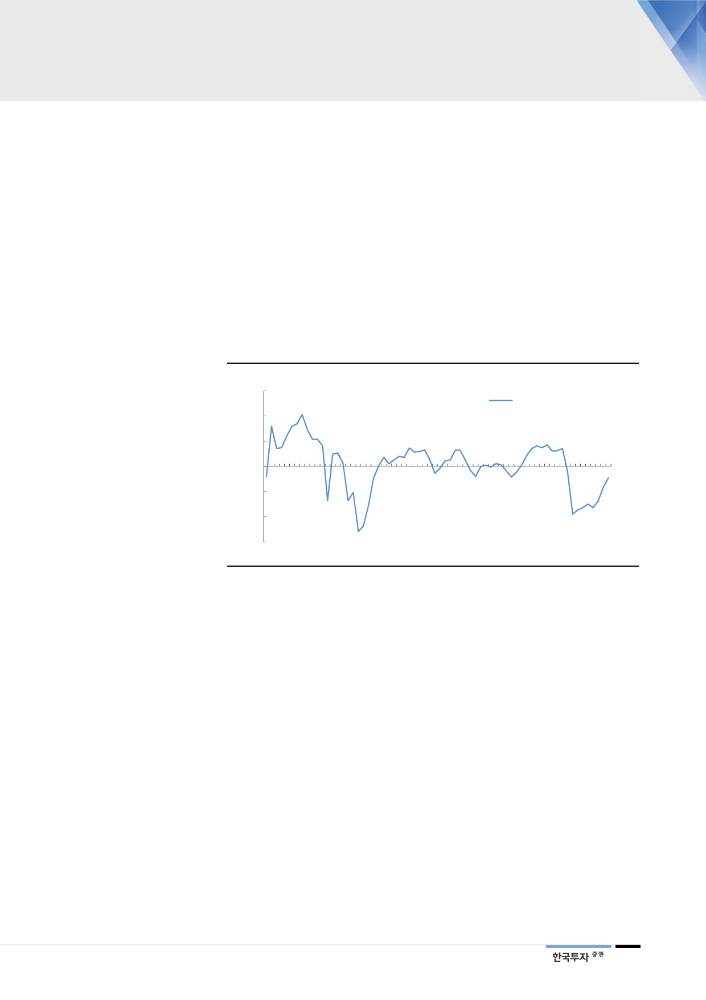

SK하이닉스 가동률 조절
삼성전자도 가동률 조절
시작
III. 낸드 - 공급조절로 수급 개선
모든 공급업체 가동률 조절 시작
1분기 SK하이닉스의 낸드사업 영업이익률은 -57%로 전분기대비 크게 악화될
것이다. 매출액 감소로 고정비부담 증가, 가격하락에 따른 재고평가손 발생, 72단
생산초기비용 등이 원인이다. 2분기에도 가격이 12% 하락하면서 수익성은 소폭
더 악화될 전망이다. 수익성 악화폭이 예상보다 확대되고 매출총이익률이 적자전
환되면서 가동률 조절에 나선 것으로 파악된다. SK하이닉스를 포함해 산업 전체
의 재고가 크게 높아졌다는 점도 가동률 조절에 나선 또 다른 배경이다.
[그림 20] SK하이닉스 낸드사업 영업이익률 추이 및 전망
(%)
90
60
NAND부문 영업이익률
30
0
(30)
(60)
(90)
1Q04
1Q06
1Q08
1Q10
1Q12
1Q14
1Q16
1Q18 1Q20F
자료: SK하이닉스, 한국투자증권
낸드가격 하락폭이 확대되고 공급업체의 수익성이 크게 악화되면서 모든 낸드 공
급업체가 가동률 조절에 나서고 있다. 공식적으로 가동률 조절을 언급한 도시바,
마이크론테크놀러지 외에 국내 낸드 공급업체도 가동률 조절에 나선 것으로 파악
된다. 낸드업체들의 가동률 조절 효과는 하반기에 가시화될 것이다. 우리는 2019
년 하반기 낸드산업의 공급 증가율을 32%로 기존 40%에서 하향조정하고 수급
이 개선될 것으로 전망한다.
11